화공기사(구)(구) (2008-09-07 기출문제)
1과목: 화공열역학
1. 다음과 같은 반응이 진행될 때 기상에 대하여는 이상기체 법칙이 적용되고 고체 요오드가 평형으로 존재한다면, 2기압 25℃에서의 평형상수 값은 얼마인가?
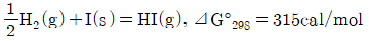
- 0.53
- 0.59
- 0.63
- 0.69
(정답률: 알수없음)

2. 정상상태 흐름이 노즐을 통과할 때의 일반적인 에너지 수지식은? (단, H는 엔탈피, U는 내부에너지, KE는 운동에너지, PE는 위치에너지, Q는 열, W는 일을 나타낸다.)
- ⊿H=0
- ⊿H+⊿KE=0
- ⊿H+⊿PE=0
- ⊿U=Q-W
(정답률: 알수없음)
3. 플래쉬(Flash) 계산에 대한 다음의 설명 중 틀린 것은?
- 알려진 T,P및 전체조성에서 평형상태에 있는 2상계의 기상과 액상 조성을 계산한다.
- K인자는 가벼움의 척도이다.
- 라울의 법칙을 따르는 경우 K인자는 액상과 기상 조성안의 함수이다.
- 기포점 압력계산과 이슬점 압력계산으로 초기조건을 얻을 수 있다.
(정답률: 알수없음)
4. 다음 중 카르노사이클(Carnot cycle)의 가역과정 순서를 옳게 나타낸 것은?
- 단열압축→단열팽창→등온팽창→등온압축
- 등온팽창→등온압축→단열팽창→단열압축
- 단열팽창→등온팽창→단열압축→등온압축
- 단열압축→등온팽창→단열팽창→등온압축
(정답률: 알수없음)
5. 기-액상에서 두 성분이 한가지의 독립된 반응을 하고 있다면, 이 계의 자유도는?
- 0
- 1
- 2
- 3
(정답률: 알수없음)
6. 다음 중 맥스웰(Mazwell)관계식을 옳게 나타낸것은?
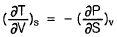
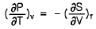
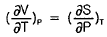
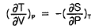
(정답률: 알수없음)
7. 크기가 동일한 3개의 상자 A,B,C에 상호작용이 없는 입자 10개가 각각 4개, 3개, 3개씩 분포되어 있고, 각 상자들은 막혀 있다. 상자들 사이의 경계를 모두 제거하여 입자가 고르게 분포되었다면 통계 열역학적인 개념의 엔트로피 식을 이용하여 경계를 제거하기 전후의 엔트로피 변화량은 약 얼마인가? (단, k는 Boltzmann상수이다.)
- 8.343k
- 15.32k
- 22.321k
- 50.024k
(정답률: 알수없음)
8. 포화액체가 낮은 압력으로 조름팽창되면 상태는 어떻게 변하는가?
- 온도는 변화가 없고 엔탈피는 감소한다.
- 엔탈피가 증가한다.
- 액체의 일부가 기화한다.
- 액체의 온도가 증가한다.
(정답률: 알수없음)
9. 30℃와-10℃에서 작동하는 이상적인 냉동기의 성능 계수는 약 얼마인가?
- 6.58
- 7.58
- 13.65
- 14.65
(정답률: 알수없음)
10. 초기에 메탄, 물, 이산화탄소, 수소가 각각 1`몰씩 존재하고 다음과 같은 반응이 이루어질 경우 물의 올분율을 반응좌표 ε로 옳게 나타낸 것은?
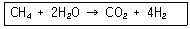
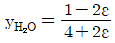
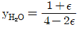
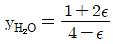
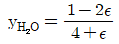
(정답률: 알수없음)
11. 순수한 물질 1몰의 깁스 자유에너지와 같은 것은?
- 내부에너지
- 헬름홀즈 자유에너지
- 화학포텐셜
- 엔탈피
(정답률: 알수없음)
12. 엔트로피와 에너지에 관한 설명 중 틀린 것은?
- 절대온도 0 K에서 완벽한 결정구조체의 엔트로피는 0 이다.
- 시스템과 주변환경을 포함하여 엔트로피가 감소하는 공정은 있을 수 없다.
- 고립된 계의 에너지는 항상 일정하다.
- 고립된 계의 엔트로피는 항상 일정하다.
(정답률: 알수없음)
13. 일반적으로 몰리에(Mollier)선도의 종축과 횡축은 무엇을 표시하는가?
- 온도와 엔트로피
- 엔탈피와 엔트로피
- 압력과 엔탈피
- 압력과 용적
(정답률: 알수없음)
14. 반데르발스(Van der Waals)식이 다음과 같을 때 임계점 에서의 값을 옳게 나타낸 것은? (단, Tc는 임계온도, a,b는 상수이다.)
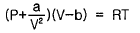
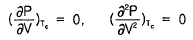
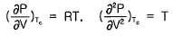
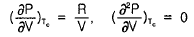
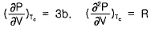
(정답률: 알수없음)
15. 다음의 반응이 760℃, 1기압에서 일어난다. 반음한 몰분율을 X라 하면 이 때의 평형상수 KP를 구하는 식은? (단, 초기에 CO2와 H2는 각각 1몰씩이며, 초기의 CO와 H20는 없다고 가정한다.)
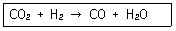
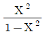
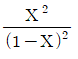
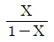
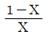
(정답률: 알수없음)
16. 제2비리얼 상태방정식을 사용할 때 300K, 12atm에 있는 기체의 몰부피는 약 몇 cm3/mol인가? (단, 이 온도에서 기체의 제2비리얼 계수 B 값은 -140cm3/mol이다.)
- 1911.5
- 2191.5
- 3460.2
- 3749.2
(정답률: 알수없음)
17. 다음 중 상태함수가 아닌 것은?
- 엔탈피
- 내부에너지
- 일에너지
- 깁스자유에너지
(정답률: 알수없음)
18. 2⑤℃, 10.2atm에서의 과열수증기의 퓨개시티계수가 0.9415일 때의 퓨개시티(Fugacity)는 약 얼마인가?
- 9.6atm
- 10.6atm
- 11.6atm
- 12.6atm
(정답률: 알수없음)
19. 열역학 제2법칙에 관련된 설명 중 틀린 것은?
- 열은 뜨거운 물체에서 찬 물체로 흐른다.
- 두 개의 열원사이에서 얻을 수 있는 일의 양은 카르노 사이클의 이상엔진보다 높을 수 없다.
- 엔트로피는 상태 함수이며, 그 변화는 초기조건과 최종 조건만으로 계산이 가능하다.
- 모든 공정에서 시스템의 엔트로피 변화는 항상 양의 값을 가진다.
(정답률: 알수없음)
20. 압력이 1atm인 공기가 가역 정압과정으로 1m3에서 11m3으로 변화했을 때 계가 한 일의 크기는 약 몇 kcal 인가?
- 242
- 1033
- 2420
- 103300
(정답률: 알수없음)
2과목: 화학공업양론
21. 50mol% 에탄올 수용액을 밀폐용기에 넣고 가열하여 일정 온도에서 평형이 되었다. 이 때 용액은 에탄올 27mol%이고, 증기조성은 에탄올 57mol%이었다. 원요액의 몇%가 증발되었는가?
- 23.46
- 30.56
- 76.66
- 89.76
(정답률: 알수없음)
22. 70% H2SO4 용액 1000kg 이 차지하는 부피는 약 몇 m3인가? (단, 이 용액의 비중은 1.62이다.)
- 0.617
- 0.882
- 1.582
- 1.620
(정답률: 알수없음)
23. 수분이 60wt%인 어욱을 500kg/h의 속도로 건조하여 수분을 20wt%로 만들 때 수분의 증발속도는 몇 kg/h인가?
- 200
- 220
- 240
- 250
(정답률: 알수없음)
24. 10wt%의 식염수 100kg을 20wt%로 농축하려면 몇 kg의 수분을 증발시켜야 하는가?
- 25
- 30
- 40
- 50
(정답률: 알수없음)
25. 다음 순환(recycle)과 우회(bypass)에 대한 설명 중 틀린 것은?
- 순환(recycle)은 공정을 거쳐 나온 흐름의 일부를 원료로 함께 공정에 공급한다.
- 우회(bypass)는 원료의 일부를 공정을 거치지 않고, 그 공정에서 나오는 흐름과 합류시킨다.
- 순환(recycle)과 우회(bypass) 조작은 연속적인 공정에서 행한다.
- 우회(bypass)와 순환(recycle) 조작에 의한 조성의 변화는 같다.
(정답률: 알수없음)
26. 질소 1mol과 수소 3mol의 혼합가스를 100기압 하에서 500℃로 유지하여 평형에 도달되었을 때 0.43mol의 암모니아가 생성되었다면 이 때의 가스 몰조성은?
- N2 11%, H2 33%, NH3 56%
- N2 15%, H2 45%, NH3 40%
- N2 22%, H2 50%, NH3 28%
- N2 22%, H2 66%, NH3 12%
(정답률: 알수없음)
27. 20℃에서 순수한 MnSO4의 물에 대한 용해도는 62.9이다. 20℃에서 포화용액을 만들기 위해서는 100g의 물에 몇 g의 MnSO4ㆍ5H20을 녹여야 하는가? (단, Mn의 원자량은 55이다.)
- 120.6
- 140.6
- 160.6
- 180.6
(정답률: 알수없음)
28. 20℃의 물 1kg을 150℃ 수증기로 변화시키는데 필요한 열량은 약 몇 cal 인가? (단, 물의 비열은 18cal/molㆍK 이고, 수증기의 비열은 8.0cal/molㆍK로 일정하며, 물의 증발열은 9.7×10<sup>3</sup>cal/mol 이다.)
- 5.41×105
- 6.41×105
- 7.41×105
- 8.41×105
(정답률: 알수없음)
29. 27℃, 8기압의 공기 1kg이 밀폐된 강철용기 내에 들어있다. 이 용기 내에 공기 2kg을 추가로 집어넣었다. 이 때 공기의 온도가 127℃이었다면 이 용기 내의 압력은 몇 기압이 되는가? (단, 이상기체로 가정한다.)
- 21
- 32
- 48
- 64
(정답률: 알수없음)
30. 연료를 완전 연소시킬 때, 이론상 필요한 공기량을 AO, 실제 공급한 공기량을 A라고 하면 과잉공기 %를 옳게 나타낸 것은?
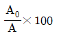
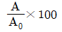
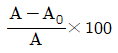
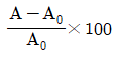
(정답률: 알수없음)
31. 지름이 10cm인 파이프 속으로 기름의 유속이 10cm/s일 때 지름이 2cm인 파이프 속에서의 유속은 몇 cm/s인가?
- 50
- 100
- 250
- 500
(정답률: 알수없음)
32. CO2880g을 40L의 용적으로 압축하려고 한다. CO2를 이상기체라고 가정할 때, 27℃에서 필요한 압력은 약 몇 psi인가?
- 119
- 141
- 162
- 181
(정답률: 알수없음)
33. 산의 질량분율이 XA인 수용액 L kg과 XB인 수용액 N kg을 혼합하여 XM인 산 수용액을 얻으려고 한다. L과 N의 비 L/N를 구한 것은?
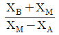
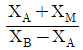
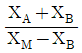
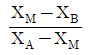
(정답률: 알수없음)
34. 순수한 산소를 공기와 혼합시켜 50mol%의 산소 조성을 가진 혼합공기로 바꾸고자 할 때 산소와 공기의 부피 혼합비는 약 얼마인가? (단, 산소 : 공기의 혼합비를 나타낸다.)
- 17:20
- 19:30
- 32:40
- 29:50
(정답률: 알수없음)
35. 15℃, 760mmHg에서 상대습도가 75%인 공기의 mol습도(mol 수증기/mol건조공기)는 약 얼마인가? (단, 15℃일 때의 물의 증기압은 12.8mmHg 이다.)
- 0.0128
- 0.0228
- 0.0328
- 0.0428
(정답률: 알수없음)
36. Dulong-Petit의 법칙에 대한 설명으로 옳은 것은?
- 온도가 증가하면 열용량은 감소한다.
- 절대온도 0 K에서 열용량은 0 이 된다.
- 온도가 감소하면 열용량은 감소한다.
- 결정성 고체원소의 그램원자 열용량은 일정하다.
(정답률: 알수없음)
37. 탄소 3g이 산소 16g 중에서 완전 연소되었다면 연소 후 혼합기체의 부피는 표준 상태를 기준으로 몇 L 인가?
- 5.6
- 11.2
- 16.8
- 22.4
(정답률: 알수없음)
38. “고체나 액체의 열용량은 그 화합물을 구성하는 개개원소의 열용량의 합과 같다.”는 누구의 법칙인가?
- Dulong Petit
- Kopp
- Trouton
- Hougen Watson
(정답률: 알수없음)
39. 고립계에서 0℃의 얼음 10g에 40℃인 물 50g을 가하였다. 최종 평형온도는 몇 ℃인가? (단, 얼음의 융해열은 336J/g 이다.)
- 10.2
- 20.0
- 23.1
- 26.1
(정답률: 알수없음)
40. 다음 반응이 20℃에서 일어날 때 정압반응열과 정적반응열의 차이는 몇 cal인가? (단, 기체는 이상기체로 가정한다.)
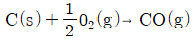
- 91
- 191
- 291
- 391
(정답률: 알수없음)
3과목: 단위조작
41. 추출에서 추료(feed)에 추제(extracting solvent)를 가하여 잘 접촉시키면 2상으로 분리된다. 이 중 불활성 물질이 많이 남아 있는 상을 무엇이라고 하는가?
- 추출상(extract)
- 추잔상(raffinate)
- 추질(solute)
- 슬러지(sludge)
(정답률: 알수없음)
42. 스팀의 평균온도가 120℃이고, 물의 평균온도가 60℃이며 총괄열전달계수가 3610kcal/m2ㆍhㆍ℃, 열전달표면적이 0.⑤35m2인 회분식 열교환기에서 매 시간당 전달된 열량은 약 몇 kcal인가?
- 3753
- 8542
- 10451
- 11588
(정답률: 알수없음)
43. 롤 분쇄기에 상당직경 4cm인 원료를 도입하여 상당직경 1cm로 분쇄한다. 분쇄원료와 롤사이의 마찰계수가 1/√3일 때 롤지름은 약 몇 cm인가?
- 6.6
- 9.2
- 15.3
- 18.4
(정답률: 알수없음)
44. 대기압에서 에탄올과 물의 혼합물이 그 증기와 기맥 평형을 이루고 있을 때 기상의 조성은 에탄올 3.3몰, 수증기 1.7몰이고 이 때 액상에서의 에탄올 몰분율이 0.52라면 에탄올의 물에 대한 상대 휘발도는?
- 0.51
- 1.08
- 1.79
- 1.94
(정답률: 알수없음)
45. 정류에 있어서 전 응축기를 사용할 경우 환류비를 3으로 할 때 유출되는 탑위제품 1mol/h당 응축기에서 응축해야할 증기량은 몇 mol/h 인가?
- 3.5
- 4
- 4.5
- 5
(정답률: 알수없음)
46. 3중 효용관의 첫 증발관에 들어가는 수증기의 온도는 108℃이고 맨 끝 효용관에서 용액의 비점은 52℃이다. 각 효용관의 총괄 열전달계수(W/m2ㆍ℃)가 2500, 2000, 1000 일 때 2효용관액의 끓는점은 약 몇 ℃인가? (단, 비점 상승이 매우 작은 액체를 농축하는 경우이다.)
- 52.6
- 81.5
- 96.2
- 106.6
(정답률: 알수없음)
47. 흑체의 전 복사능은 절대온도의 4승에 비례한다는 것을 나타내는 식은?
- 키르히호프(Kirchoff)의 식
- 스테판-볼쯔만(Stefan-Boltzmann)의 식
- 프랭크(Planck)의 식
- 비인(Wien)의 식
(정답률: 알수없음)
48. 불포화상태 공기의 상대습도(relative humidity)를 Hr.비교습도(percentage humidity)를 Hp로 표시할 때 그 관계를 옳게 나타낸 것은? (단, 습도가 0% 또는 100%인 경우는 제외한다.)
- Hp = Hr
- Hp ＞ Hr
- Hp ＜ Hr
- Hp + Hr = 0
(정답률: 알수없음)
49. 메탄올 40mol%, 물 60mol%의 혼합액을 정류하여 메탄올 95mol%의 유출액과 5mol%의 관출액으로 분리한다. 유출액 100kmol/h을 얻기 위해서는 공급액의 양을 몇 kmol/h로 하면 되는가?
- 175
- 190
- 226
- 257
(정답률: 알수없음)
50. 흡수탑에서 전달단위수(NTU)는 10이고 전달단위높이(HTU)가 0.5m일 경우, 필요한 충전물의 높이는 몇 m 인가?
- 0.5
- 5
- 10
- 20
(정답률: 알수없음)
51. 비중 0.8, 점도 40cP의 원유를 36m3/h로 100m 떨어진 탱크에 보낸다. 이 때 사용된 직원관의 내경은 30cm이고 수평이다. 이 관로의 압력손실은 약 몇 kgf/cm2인가?
- 0.002
- 0.⑤
- 0.15
- 0.2
(정답률: 알수없음)
52. 비중 1.0 점도가 1cP인 몰이 내경 5cm 관을 4m/s의 유속으로 흐르다가 내경이 10cm인 관을 통해 흐르고 있다. 이 경우 확대손실은 약 몇 kgfㆍm/kg인가?
- 0.23
- 0.46
- 0.82
- 0.91
(정답률: 알수없음)
53. 안지름이 52.9mm인 관에서 비중이 0.9, 점도가 2P인 기름과 비중이 1.0, 점도가 1cP인 물의 임계속도는 각각 약 몇 m/s 인가? (단, 레이놀즈수의 임계값은 2100 이다.)
- 기름 : 6.24, 물 : 0.04
- 기름 : 8.82, 물 : 0.08
- 기름 : 8.82, 물 : 0.04
- 기름 : 6.24, 물 : 0.08
(정답률: 알수없음)
54. 증류에서 일정한 비휘발도 값으로 2를 가지는 2성분 혼합물을 90mol%인 탑위제품과 10mol%인 탑밑제품으로 분리하고자 한다. 최소 이론 단수는 얼마인가?
- 3
- 4
- 6
- 7
(정답률: 알수없음)
55. 다음 중 물질전달이 포함되지 않는 단위조작은?
- 중류
- 흡수
- 전도
- 증습
(정답률: 알수없음)
56. 휙(Fick)의 법칙에서 확산속도에 대한 설명으로 옳은 것은?
- 확산속도는 농도 구배에 반비례한다.
- 확산속도는 농도 구배에 비례한다.
- 확산속도는 온도 구배에 반비례한다.
- 확산속도는 온도 구배에 비례한다.
(정답률: 알수없음)
57. 증류탑에서 환류비에 대한 설명으로 틀린 것은?
- 환류비를 크게 하면 이론단수가 줄어든다.
- 환류비를 최소로 하면 유출량이 0에 가깝게 되어 실제로는 사용되지 않는다.
- 환류비를 크게 하면 제품의 순도가 높아진다.
- 환류비가 무한대일 때 이론단수를 최소 이론단수라고 한다.
(정답률: 알수없음)
58. 다음 중 압력강하를 일정하게 유지하는데 필요한 유로의 면적변화를 측정하여 유량을 구하는 것은?
- 오리피스미터
- 벤츄리미터
- 피토관
- 로터미터
(정답률: 알수없음)
59. 원심펌프를 동작할 때 공동화(Cavitation)가 일어나는 주된 이유는?
- 임펠러 흡입부의 압력이 유체의 증기압보다 클 때
- 임펠러 흡입부의 압력이 대기압보다 클 때
- 입펠러 흡입부의 압력과 유체의 증기압의 합이 0 일 때
- 임펠러 흡입부의 압력이 유체의 증기압보다 작을 때
(정답률: 알수없음)
60. 동점성계수의 단위에 해당하는 것은?
- m2/kg
- m2/s
- kg/mㆍs
- kg/mㆍs2
(정답률: 알수없음)
4과목: 반응공학
61. 전달함수가 Kc(1+(1/3s)+(3/s))인 PID 제어기에서 미분시간과 적분시간은 각각 얼마인가?
- 미분시간 : 3, 적분시간 : 3
- 미분시간 : 1/3, 적분시간 : 3
- 미분시간 : 3, 적분시간 : 1/3
- 미분시간 : 1/3, 적분시간 1/3
(정답률: 알수없음)
62. 어떤 액위저장탱크로부터 펌프를 이용하여 일정한 유량으로 액체를 뽑아내고 있다. 이 탱크로는 지속적으로 일정량의 액체가 유입되고 있다. 탱그로 유입되는 액체의 유량이 기울기가 1인 1차 선형변화를 보인 경우 정상 상태로 부터의 액위의 변화 H(t)를 옳게 나타낸 것은? (단, 탱크의 단면적은 A이다.)
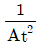
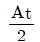
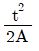
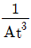
(정답률: 알수없음)
63. 폭이 w 이고, 높이가 h인 사각펄스의 Laplace변환으로 옳은 것은?
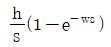
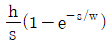
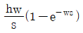
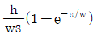
(정답률: 알수없음)
64. 직렬로 연결된 일차계(first-order wywtem)의 수가 증가함에 따라서 전체 시스템의 계단응답(step response)은 어떻게 되는가?
- 변화하지 않는다.
- 직선적으로 빨라진다.
- 늦어진다.
- 지수함수적으로 빨라진다.
(정답률: 알수없음)
65. 전달함수
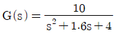
인 2차 계의 시정수 τ와 damping factor ε의 값은?- τ = 0.5, ε = 0.8
- τ = 0.8, ε = 0.4
- τ = 0.4, ε = 0.5
- τ = 0.5, ε = 0.4
(정답률: 알수없음)
66.
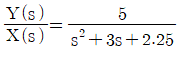
일 때 단위 계단응답에 해당 하는 것은?- 자연진동
- 무진동 감쇠
- 무감쇠 진동
- 임계 감쇠
(정답률: 알수없음)
67. 다음 전달함수에 관한 설명 중 틀린 것은?
- 동적 시스템의 입력과 출력 간의 관계를 라플라스 함수로 표현한다.
- 전달함수 형태는 입력변수의 함수 형태에 따라 결정된다.
- 전달함수 형태는 초기조건에 상관없이 결정된다.
- 공정이 비선형인 경우 선형화시켜 전달함수를 구할 수 있다.
(정답률: 알수없음)
68. 전달함수가 4/s인 계의 주파수 응답에 있어서 진폭비와 위상각은?
- 진폭비 = 4/ω, 위상각 = -90°
- 진폭비 = 4/ω, 위상각 = -180°
- 진폭비 = 1/ω, 위상각 = -90°
- 진폭비 = 1/ω, 위상각 = -180°
(정답률: 알수없음)
69. 다음 그림은 피제어 변수 F0를 제어하는 3가지 제어방식을 나타낸 것이다. 제어방식이 각각 되먹임(feed back)인지 또는 앞먹임(feed forward)인지에 대한 설명으로 옳은 것은?
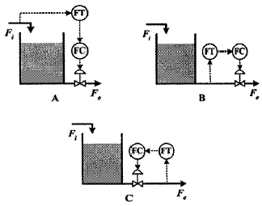
- A, B, C 모두 되먹임이다.
- A는 앞먹임, B 와 C는 되먹임이다.
- A와 B는 앞먹임, C는 되먹임이다.
- A, B, C 모두 앞먹임이다.
(정답률: 알수없음)
70. Spring-mass-damper로 구성된 감쇠진동기(dampedoscillator)에서 2차 미분 형태를 나타내는 향과 관련이 있는 것은?
- 힘 = 질량 × 가속도
- 힘 = 용수철 Hooke 상수 × 늘어난 길이
- 힘 = 감쇠계수 × 위치의 변화율
- 힘 = 시간의 함수인 구동력
(정답률: 알수없음)
71. 제어계의 안정성을 판별하는 방법에 해당되는 것은?
- 매케이브 - 틸레법
- 아인슈타인법
- 길리란드법
- 나이퀴스트법
(정답률: 알수없음)
72. 설정치(Set point)는 일정하게 유지되고, 외부교란변수(disturbance)가 시간에 따라 변화할 때 피제어변수가 설정치를 따르도록 조절변수를 제어하는 것은?
- 조정(Regulatory)제어
- 서보(Servo)제어
- 감시제어
- 예측제어
(정답률: 알수없음)
73. 다음 중 열전대(Thermocouple)와 관계있는 효과는?
- Thomson - Peltier 효과
- Piezo - electric 효과
- Joule -Thomson 효과
- Van der waals 효과
(정답률: 알수없음)
74. 어떤 제어계가 다음과 같은 미분방정식으로 나타난다. 이 계의 전달함수는? (단, y(t)는 출력, x(t)는 입력이며 시간 t 의 초기 조건 y(0)=0 이다.)
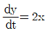
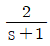
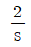
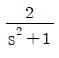
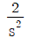
(정답률: 알수없음)
75. 다음 블록선도로부터 전달함수 C/U1를 옳게 나타낸 것은?
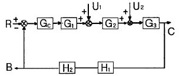
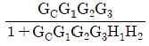
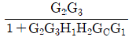
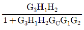
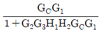
(정답률: 알수없음)
76. 이득(gain)이 1인 1차계로 나타낼 수 있는 수은 온도계가 0℃를 가리키고 있다. 이 온도곌르 항온조 속에 넣고 3분이 경과한 후 온도계는 40℃를 가르켰다. 수은 온도계의 시간 상수가 2분 일 때 항온조의 온도는 약 몇 ℃인가?
- 45.5
- 51.5
- 62.4
- 70.2
(정답률: 알수없음)
77. 다음 중 비선형계에 해당하는 것은?
- 0차 반응이 일어나는 혼합 반응기
- 1차 반응이 일어나는 혼합 반응기
- 2차 반응이 일어나는 혼합 반응기
- 화학 반응이 일어나지 않는 혼합조
(정답률: 알수없음)
78. Underdamped 2차 공정의 특성에 관한 설명 중 옳지 않은 것은?
- 고유진동 주파수(natural frequency of oscillation)가 커지면 overshoot이 커진다.
- 고유진동 주파수(natural frequency of oscillation)가 커지면 정착시간(settling time)이 짧아진다.
- 고유진동 주파수(natural frequency of oscillation)가 커지면 상승시간(rise time)이 짧아진다.
- 화학공정 자체가 under damped 특성을 갖는 경우는 많지 않다.
(정답률: 알수없음)
79. 그림 (a)와 (b)가 등가이기 위한 블록선도 (b)에서의 m의 값은?
- G
- 1/G
- G2
- 1 - G
(정답률: 알수없음)
80. offset 이 0인 controller만 나열된 것은?
- on-off, P
- on-off, PI
- PI, PID
- PI, PD
(정답률: 알수없음)
5과목: 공정제어
81. PVC의 분자량 분포가 다음과 같을 때 수평균 분자량 ( )과 중량평균 분자량(
)과 중량평균 분자량( )은?
)은?
- = 4.1 × 104, = 4.6 × 104
 = 4.6 × 104,
= 4.6 × 104,  = 4.6 × 104
= 4.6 × 104 = 1.2 × 104,
= 1.2 × 104,  = 1.3 × 104
= 1.3 × 104 = 1.3 × 104,
= 1.3 × 104,  = 1.2 × 104
= 1.2 × 104
(정답률: 알수없음)
82. 다음 물질 중 안정하기 때문에 비료용으로 생산되기에 적합하며 질소대 인산비를 미리 알맞게 조절하여 생산되는 인산암모늄은?
- NH4H2PO4
- (NH4)3PO4
- Ca3(PO4)2
- (NH4)2HPO4
(정답률: 알수없음)
83. 석유ㆍ석탄 등의 화석연료 이용 효율 및 환경오염에 대한 설명으로 옳은 것은?
- CO2의 배출은 오존층파괴의 주 원인이다.
- CO2와 SOX는 광화학스모그의 주 원인이다.
- NOX는 산성비의 주 원인이다.
- 열에너지로부터 기계에너지로의 변환효율은 100%이다.
(정답률: 알수없음)
84. 게르마늄과 같은 반도체 원소는 가장 바깥 껍질에 몇 개의 원자를 가지면서 공유 결합을 이루는가?
- 2개
- 3개
- 4개
- 5개
(정답률: 알수없음)
85. 질산과 황산의 혼산에 글리세린을 반응시켜 만드는 물질로 비중이 약 1.6이고 다이너마이트를 제조할 때 사용되는 것은?
- 글리세릴 디니트레이트
- 글리세릴 모노니트레이트
- 트리니트로톨루엔
- 니트로글리세린
(정답률: 알수없음)
86. 다음 물질을 염기성 세기가 작은 것부터 큰 순서로 옳게 나열한 것은?
- ①＜③＜②
- ③＜②＜①
- ①＜②＜③
- ②＜③＜①
(정답률: 알수없음)
87. 합성염산 제조공정에서 폭발방지의 목적으로 공급하는 수소와 염소의 몰비에 대한 설명으로 옳은 것은?
- 수소와 염소의 몰비는 1 : 1 보다 수소가 약간 과잉인 상태로 공급한다.
- 수소와 염소의 몰비는 1 : 1 로 같은 양의 상태로 공급한다.
- 수소와 염소의 몰비는 1 : 1 보다 염소가 약간 과잉인 상태로 공급한다.
- 초기에 수소와 염소의 몰비는 1 : 1 에서 점진적으로 염소의 양을 증가시켜 20% 과잉상태까지 공급한다.
(정답률: 알수없음)
88. 옥탄가에 대한 설명으로 틀린 것은?
- 이소옥탄의 옥탄가를 0으로 하여 기준치로 삼는다.
- 가솔린의 안티노크성(antiknock property)을 표시하는 척도이다.
- n-헵탑과 이소옥탐의 비율에 따라 옥탄가를 구할 수 있다.
- 탄화수소의 분자구조와 관계가 있다.
(정답률: 알수없음)
89. Friedel-Crafts 알킬화 반응에서 주로 사용하는 촉매는?
- AICI3
- ZnCI2
- BaI3
- HgCI2
(정답률: 알수없음)
90. 수소의 공업적 제조법이 아닌 것은?
- 전기분해법
- 석탄법
- 석유법
- 증발법
(정답률: 알수없음)
91. 다음 반응식처럼 식염수를 전기 분해하여 1톤의 NaOH를 제조하고자 할 때 필요한 NaCI의 이론량은 약 몇 kg인가? (단, 원자량은 Na 23, CI 35.5 이다.)
- 1463
- 1520
- 2042
- 3211
(정답률: 알수없음)
92. 레페(Reppe)합성반응을 크게 4가지로 분류할 때 해당 하지 않는 것은?
- 알킬화 반응
- 비닐화 반응
- 고리화 반응
- 카르보닐화 반응
(정답률: 알수없음)
93. 암모니아 소다법(솔베이법)을 나타내는 반응식은?
- NaCI + NH3 + CO2 + H2O → NaHCO3 + NH4CI
- NaCI + 2NH3 + CO2 + H2O → NaCO2NH2 + NH4CI
- 2NaCI + H2SO4 → Na2SO4 + 2HCI
- 4NaCI + 2SO2 + O2 + 2H2O → 2Na2SO4 + 4HCI
(정답률: 알수없음)
94. 니트로벤젠을 환원시켜 아닐린을 얻고자 할 때 사용하는 것은?
- Fe, HCI
- Ba, H2O
- C, NaOH
- S, NH4CI
(정답률: 알수없음)
95. Ni/Cd 전지에서 음극의 수소발생을 억제하기 위해 음극에 과량으로 첨가하는 물질은 무엇인가?
- Cd(OH)2
- KOH
- MnO2
- Ni(OH)2
(정답률: 알수없음)
96. 프로필렌, CO 및 H2의 혼합가스를 촉매하에서 고압으로 반응시켜 카르보닐 화합물을 제조하는 반응은?
- 옥소 반응
- 에스테르화 반응
- 니트로화 반응
- 스위트님 반응
(정답률: 알수없음)
97. 다음중 Ⅲ-Ⅴ 화합물 반도체로만 나열된 것은?
- SiC, SiGe
- AIAs, AISb
- CdS, CdSe
- PbS, PbTe
(정답률: 알수없음)
98. 다음 중 Le Blanc 법과 관계가 없는 것은?
- 망초(황산나트륨)
- 흑회(black ash)
- 녹액(green liquor)
- 암모니아 함수
(정답률: 알수없음)
99. 다음 중 옥탄가가 가장 낮은 것은?
- 직류 가솔린
- 접촉분해 가솔린
- 중합 가솔린
- 알킬화 가솔린
(정답률: 알수없음)
100. 석회질소 비료에 대한 설명중 틀린 것은?
- 토양의 살균효과가 있다.
- 과린산석회, 암모늄염 등과의 배합비료로 적당하다.
- 저장 중 이산화탄소, 물을 흡수하여 부피가 증가한다.
- 분해시 생성되는 디시안디아미드는 식물에 유해하다.
(정답률: 알수없음)
6과목: 화학공업개론
101. 다음과 같은 반응이 일정한 밀도에서 비가역적이고, 2분자적(bimolecular)으로 일어난다. 이 때 R과 A의 반응속도식의 비 rR/rA를 옳게 나타낸 것은? (단, R은 목적하는 생성물이고, S는 목적하지 않은 생성물이다.)
(정답률: 알수없음)
102. 단열 반응조작에서 에너지 수지의 도식표현이 다음 그림과 같을 때 발열반응을 나타내는 것은?
- 직선 1
- 직선 2
- 곡선 3
- 곡선 4
(정답률: 알수없음)
103. 다음 반응이 기초 반응(elementary reaction)이라면 반응 속도식으로 옳은 것은? (단, rA는 반응물 A의 반응 속도이다.)
- rA = -kCACB
- rA = -kCACB + k'CD
- rA = -kCACB2
- rA = -kCACB2 + k'CD
(정답률: 알수없음)
104. 다음 중 Damko hler수(Da)에 대한 설명으로 틀린 것은?
- 주어진 조건에 따라 τk 또는 τkCAO와 같이 표현 된다.
- CSTR 반응기에서 전화율의 정도를 나타내는 지수로 활용된다.
- 연속흐름 반응기에서 일반적으로 Da가 크면 전화율 CI 크다.
- Da를 이용하여 모든 반응기에서 얻을 수 있는 전화율을 쉽게 추산할 수 있다.
(정답률: 알수없음)
1⑤. 1차 반응에서 반응속도가 10×10-5mol/cm3ㆍs이고 반응물의 농도가 2×10-2mol/cm2이면 속도 상수는 몇 s-1이겠는가?
- 5×10-3
- 5×10-4
- 10×10-3
- 10×10-4
(정답률: 알수없음)
106. 그림과 같이 직렬로 연결된 혼합 흐름 반응기에서 액상 1차 반응이 진행될 때 입구의 농도가 CO이고 출구의 농도가 C2일 때 총 부피가 최소로 되기 위한 조건이 아닌 것은?
- τ1 = τ2
- V1 = V2
(정답률: 알수없음)
107. A→R인 반응이 부피가 0.1L인 플러그 흐름 반응기에서 -rA=50CA2mol/Lㆍmin로 일어난다. A의 초기농도 CAO는 0.1mol/L 이고 공급속도가 0.⑤L/min 일 때 전화율은 얼마인가?
- 0.509
- 0.609
- 0.809
- 0.909
(정답률: 알수없음)
108. 회분식반응기에서 n차 반응이 일어날 떄의 설명으로 옳은 것은?
- n＞1이면 반응물의 농도가 어떤 유한시간에 0 이되고 다음에는 음으로 된다.
- 0<zero)차 반응의 반응속도는 농도의 함수이다.
- n＜1 이면 일 떄 CA=0이다.
- 양대수방안지(log-log paper)에 n 차반응의 반감기를 초기농도의 함수로 표시하면 기울기가 (n-1)2이다.
(정답률: 알수없음)
109. 다음의 액상 균일 반응을 순환비가 1인 순환식 반응기에서 반응시킨 결과 반응물 A의 전화율이 50%이었다. 이 경우 순환 pump를 중지시키면 이 반응기에서 A의 전화율은 얼마인가?
- 45.6%
- 55.6%
- 60.6%
- 66.6%
(정답률: 알수없음)
110. A→B의 액상 2차 반응이 CSTR에서 진행될 때 전화율이 0.5이다. 반응기 체적을 6배로 증가시킬 때 전화율은 얼마인가?
- 0.45
- 0.55
- 0.75
- 0.85
(정답률: 알수없음)
111. 이 되는 효소반응과 관계없는 것은?
- 반응속도에 효소의 농도가 영향을 미친다.
- 반응물질의 농도가 높을 때 반응속도는 반응물질의 농도에 반비례한다.
- 반응물질의 농도가 낮을 때 반응속도는 반응물질의 농도에 비례한다.
- Michaelis-Menten식이 관계된다.
(정답률: 알수없음)
112. A→B인 1차 반응에서 플러그 흐름 반응기의 공간시간(space time)τ를 옳게 나타낸 것은? (단, 밀도는 일정하고, XA는 A의 전화율, k는 반응속도상수이다.)
(정답률: 알수없음)
113. 평균체류 시간이 같은 관형반응기와 혼합반응기에서 다음과 같은 화학반응이 일어날 때 관형반응기의 전화율 XP와 혼합반응기의 전화율 Xm의 비 XP/Xm가 다음 중 가장 큰 반응차수는?
- 0차
- 1/2차
- 1차
- 2차
(정답률: 알수없음)
114. 다음과 같은 기상반응이 등온 변용 플러그 흐름 반응기에서 이루어지고 있다. 반응기로 유입되는 feed는 50%의 A와 50%의 불활성 물질로 구성되어 있다. A의 75%가 반응하는데 소요되는 공간시간(space time)은 약 몇 초인가?
- 1.5초
- 2.1초
- 3.4초
- 4.2초
(정답률: 알수없음)
115. 이상적인 반응기 중 플러그 흐름반응기에 대한 설명으로 틀린 것은?
- 반응기 입구와 출구의 몰 속도가 같다.
- 정상상태 흐름반응기이다.
- 축방향의 농도 구배가 없다.
- 반응기내의 온도 구배가 없다.
(정답률: 알수없음)
116. 부피가 일정한 회분식반응기에서 반응홉합물 A 기체의 최초 압력을 478mmHg로 할 경우에 반감기가 80s이었다고 한다. 만일 이 A 기체의 반응 혼합물에 최초 압력을 315mmHg로 하였을 때 반감기가 120s로 되었다면 반응의 차수는 몇 차 반응으로 예상할 수 있는가? (단, 반응물은 초기 조성이 같고, 비가역 반응이 일어난다.)
- 1차 반응
- 2차 반응
- 3차 반응
- 4차 반응
(정답률: 알수없음)
117. HBr의 생성반응 속도식이 다음고 같을 때 k2의 단위에 대한 설명으로 옳은 것은?
- 단위는 [m3ㆍs/mol] 이다.
- 단위는 [mol/m3ㆍs] 이다.
- 단위는 [(mol/m3)-0.5(s)-1] 이다.
- 단위는 무차원(dimensionless) 이다.
(정답률: 알수없음)
118. Arrhenius법칙이 성립할 경우에 대한 설명으로 옳은 것은? (단, k는 반응속도 상수 이다.)
- k 와 T는 직선관계에 있다.
- In k 와 1/T은 직선관계에 있다.
- 1/k 과 1/T은 직선관계에 있다.
- In k 와 In T-1
(정답률: 알수없음)
119. 다음 중 space velocity의 단위로 옳은 것은?
- time-1
- time
- mole/time
- time/mole
(정답률: 알수없음)
120. NO2의 분해반응은 1차반응이고 속도상수는 694℃에서 0.138s-1, 812℃에서는 0.37s-1이다. 이 반응의 활성화 에너지는 약 몇 kcal/mol 인가?
- 17.42
- 27.42
- 37.42
- 47.42
(정답률: 알수없음)
2HI(g) ⇌ H2(g) + I2(g)
이 반응에서, 기체인 HI, H2, I2의 분압을 각각 P(HI), P(H2), P(I2)라고 하면, 이상기체 법칙에 따라 다음과 같은 관계식이 성립합니다.
P(HI) = P(H2) × P(I2)
또한, 평형상수 Kc는 다음과 같이 정의됩니다.
Kc = [H2] × [I2] / [HI]^2
여기서 [H2], [I2], [HI]는 각각 H2, I2, HI의 몰농도를 나타냅니다.
이 문제에서는 고체 요오드가 평형으로 존재한다고 가정하였으므로, I2의 분압은 일정합니다. 따라서, P(I2) = 상수입니다.
또한, 반응이 평형상태에 있다는 것은 순반응속도와 역반응속도가 서로 같다는 것을 의미합니다. 따라서, 다음과 같은 관계식이 성립합니다.
Kc = 순반응속도 / 역반응속도
이 문제에서는 평형상수 값을 구하는 것이 목적이므로, 다음과 같은 방법으로 Kc 값을 구할 수 있습니다.
1. P(HI), P(H2), P(I2)를 구합니다.
P(HI) = 2 atm (반응물의 초기 분압)
P(I2) = 0.5 atm (고체 요오드가 평형으로 존재하므로, I2의 분압은 일정)
P(H2) = P(HI) / P(I2) = 4 atm (이상기체 법칙에 따라)
2. [H2], [I2], [HI]의 몰농도를 구합니다.
[H2] = P(H2) / RT = 0.134 mol/L (단위: mol/L)
[I2] = P(I2) / RT = 0.0335 mol/L (단위: mol/L)
[HI] = P(HI) / RT = 0.0673 mol/L (단위: mol/L)
3. Kc 값을 구합니다.
Kc = [H2] × [I2] / [HI]^2 = 0.59 (단위: 없음)
따라서, 정답은 "0.59"입니다.